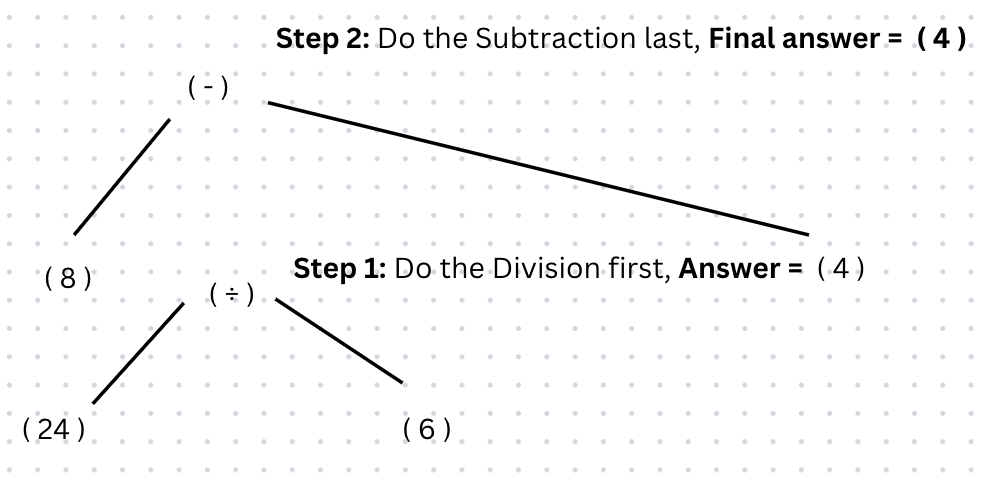

Subtraction is the last or 6th operator in the BODMAS rule.
Any Subtractions are done last after any of the operators before it are completed.
Subtraction has the mathematical operation of '-'.
Remember the order in which you work through a calculation is according to ORDER OF IMPORTANCE.
Below are some examples of BODMAS questions using subtraction to give you an idea:
Below are some step by step examples of BODMAS questions using subtraction and where you might go wrong:
Answer = 4
Potential mistake: You may end up calculating 8 - 24 as you may know to work from left to right for equations but, in BODMAS you work based on the order of importance, therefore you must do calculate the division and finally subtract.
Here is a further step by step breakdown for you to understand:
Answer = 7
Potential mistake: You may end up calculating 17 - 2 as you may know to work from left to right for equations but, in BODMAS you work based on the order of importance, therefore you must calculate what is in the brackets, then multify and finally subtract.
Here is a further step by step breakdown for you to understand:
Answer = 19
Potential mistake: You may end up calculating 27 - 4 after calculating (19 + 8) = 27, you may know to work from left to right for equations but, in BODMAS you work based on the order of importance, therefore you must do calculate what is in the brackets, then multify and finally subtract.
Here is a further step by step breakdown for you to understand:
Have a go at the questions below: